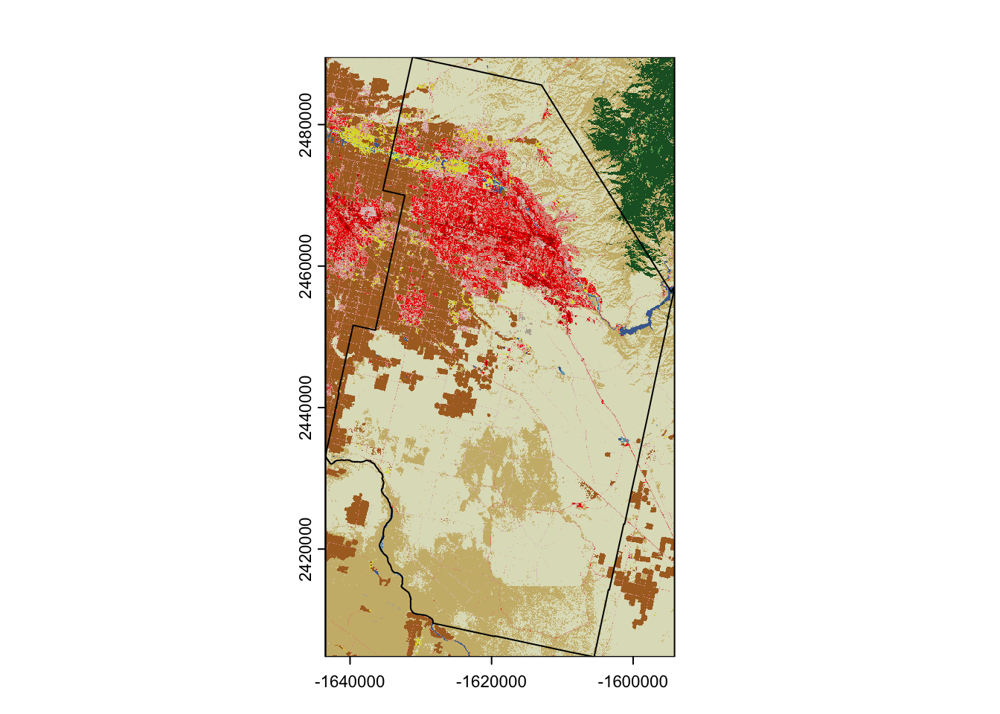

First, we’ll have to get our credentials and login to a new RStudio session. Today, we’re going to explore the landscape metrics package using the National Land Cover Dataset. You don’t need any additional data as we’ll download it in our session, but you need to load some packages.
Code
library(tidyverse)
── Attaching core tidyverse packages ──────────────────────── tidyverse 2.0.0 ──
✔ dplyr 1.1.4 ✔ readr 2.1.5
✔ forcats 1.0.1 ✔ stringr 1.5.2
✔ ggplot2 4.0.0 ✔ tibble 3.3.0
✔ lubridate 1.9.4 ✔ tidyr 1.3.1
✔ purrr 1.1.0
── Conflicts ────────────────────────────────────────── tidyverse_conflicts() ──
✖ dplyr::filter() masks stats::filter()
✖ dplyr::lag() masks stats::lag()
ℹ Use the conflicted package (<http://conflicted.r-lib.org/>) to force all conflicts to become errors
Code
library(tigris)
To enable caching of data, set `options(tigris_use_cache = TRUE)`
in your R script or .Rprofile.
Code
library(terra)
terra 1.8.70
Attaching package: 'terra'
The following object is masked from 'package:tigris':
blocks
The following object is masked from 'package:tidyr':
extract
Code
library(sf)
Linking to GEOS 3.13.0, GDAL 3.8.5, PROJ 9.5.1; sf_use_s2() is TRUE
Code
library(landscapemetrics)
Setting Some Boundaries
We need some data! The NLCD is a 30m resolution raster describing land-use across the US. It’s pretty big and unwieldy, so for the purposes of this exercise, we’ll focus just on Ada county.
Code
ada_county <-counties(state ="ID") %>%filter(., NAME =="Ada") %>%st_transform(crs ="EPSG:5070")
ada_NLCD <- terra::rast("https://dmsdata.cr.usgs.gov/geoserver/mrlc_Land-Cover-Native_conus_year_data/wcs?service=WCS&version=1.0.0&coverage=mrlc_Land-Cover-Native_conus_year_data:Land-Cover-Native_conus_year_data&BBOX=-1643474,2404759,-1594149,2489538&CRS=EPSG:5070&time=2020-01-01T00:00:00.000Z&format=image/geotiff&resx=30&resy=30&request=GetCoverage", vsi =FALSE)plot(ada_NLCD)plot(st_geometry(ada_county), add=TRUE)

The first part of this should look familiar - we’re just downloading the Ada County Boundary using the tigris package. The next part is using terra::rast to read in a file directly from the online web-service. The key part comes after the BBOX part of the link where you can plug in the correct coordinates (give an CRS) to restrict the download to something manageable. Once you’ve got it, you should be able to plot and see the different categories.
Calclulating patch metrics
The syntax for landscapemetrics is fairly straightforward with most functions starting with lsm_ followed by a letter, followed by the name of the metric. You can see the full set of patch metrics here.
Code
head(lsm_p_area(ada_NLCD))
# A tibble: 6 × 6
layer level class id metric value
<int> <chr> <int> <int> <chr> <dbl>
1 1 patch 11 1 area 5.58
2 1 patch 11 2 area 3.69
3 1 patch 11 3 area 0.630
4 1 patch 11 4 area 689.
5 1 patch 11 5 area 2.52
6 1 patch 11 6 area 1.35
We calculate some basic patch metrics using lsm_p_METRIC, but restrict the output to the first 5 entries to make the printing easier. We also use the show_lsm function to create a map based on these patch-level metrics (this only works for patch metrics, not the class or landscape metrics). In this case, we’re interested in the patch area and shape (check out the help files for the equations). In landscapemetrics patches are defined as neighboring rasters (defined as queen or rooks case using the directions argument) that share the same category. Each of these functions estimates a measure for all of the patches in a landscape (which may be as small as 1 pixel and as large as the entire landscape).
Calculating class metrics
The full list of class metrics is here and the syntax follows the format above (but replaces the p with a c). Class metrics take all of the patches within a category and summarize them - here we calculate the percent covered, the number of patches/class, and the edge density (which is the sum of edge lengths for each patch in the class divided by the total area of the category in the landscape). These metrics can give you a sense of size and dominance of the different categories.
Code
lsm_c_pland(ada_NLCD) # % of landscape occupied
lsm_c_np(ada_NLCD) # number of patches per class
lsm_c_ed(ada_NLCD)
Calculating landscape metrics
Finally, full list of landscape metrics is here](https://r-spatialecology.github.io/landscapemetrics/reference/index.html#landscape-level-metrics). We follow the same formatting strategy to access a handful of the landscape metrics. Landscape metrics look at the juxtaposition of the different classes in your landscape. We calculate the Shannon’s Diversity Index (a measure of class evenness in the landscape) and cohesion (an estimate of contiguity between like patches).
Code
lsm_l_shdi(ada_NLCD) # Shannon’s Diversity Index
# A tibble: 1 × 6
layer level class id metric value
<int> <chr> <int> <int> <chr> <dbl>
1 1 landscape NA NA shdi 1.67
Code
lsm_l_cohesion(ada_NLCD)
# A tibble: 1 × 6
layer level class id metric value
<int> <chr> <int> <int> <chr> <dbl>
1 1 landscape NA NA cohesion 99.1
:::{#quarto-navigation-envelope .hidden}
[Intro to Spatial Data in R]{.hidden render-id="quarto-int-sidebar-title"}
[Intro to Spatial Data in R]{.hidden render-id="quarto-int-navbar-title"}
[Syllabus]{.hidden render-id="quarto-int-navbar:Syllabus"}
[/syllabus.html]{.hidden render-id="quarto-int-navbar:/syllabus.html"}
[Schedule]{.hidden render-id="quarto-int-navbar:Schedule"}
[/schedule.html]{.hidden render-id="quarto-int-navbar:/schedule.html"}
[Content]{.hidden render-id="quarto-int-navbar:Content"}
[/content/index.html]{.hidden render-id="quarto-int-navbar:/content/index.html"}
[Assignments]{.hidden render-id="quarto-int-navbar:Assignments"}
[/assignment/index.html]{.hidden render-id="quarto-int-navbar:/assignment/index.html"}
[Examples]{.hidden render-id="quarto-int-navbar:Examples"}
[/example/index.html]{.hidden render-id="quarto-int-navbar:/example/index.html"}
[Lessons]{.hidden render-id="quarto-int-navbar:Lessons"}
[/lesson/index.html]{.hidden render-id="quarto-int-navbar:/lesson/index.html"}
[Resources]{.hidden render-id="quarto-int-navbar:Resources"}
[/resource/index.html]{.hidden render-id="quarto-int-navbar:/resource/index.html"}
[https://ecostatsbsu.slack.com/archives/CV4DEJ8M7]{.hidden render-id="quarto-int-navbar:https://ecostatsbsu.slack.com/archives/CV4DEJ8M7"}
[https://github.com/BSU-Spatial-Data-in-R-Fall2025]{.hidden render-id="quarto-int-navbar:https://github.com/BSU-Spatial-Data-in-R-Fall2025"}
[https://rstudio.apps.aws.boisestate.edu/]{.hidden render-id="quarto-int-navbar:https://rstudio.apps.aws.boisestate.edu/"}
[Content 2025 by [Matt Williamson](https://www.spaseslab.com) <br>
All content licensed under a
[Creative Commons Attribution-NonCommercial 4.0 International license (CC BY-NC 4.0)](https://creativecommons.org/licenses/by-nc/4.0/)
]{.hidden render-id="footer-left"}
[Made with and [Quarto](https://quarto.org/)<br>
[View the source at GitHub](https://www.github.com/mattwilliamson/isdrfall25)
Based on websites designed by [Andrew Heiss](https://github.com/andrewheiss/evalf22.classes.andrewheiss.com)
]{.hidden render-id="footer-right"}
:::
:::{#quarto-meta-markdown .hidden}
[Intro to Spatial Data in R - Surface Metrics]{.hidden render-id="quarto-metatitle"}
[Intro to Spatial Data in R - Surface Metrics]{.hidden render-id="quarto-twittercardtitle"}
[Intro to Spatial Data in R - Surface Metrics]{.hidden render-id="quarto-ogcardtitle"}
[Intro to Spatial Data in R]{.hidden render-id="quarto-metasitename"}
[]{.hidden render-id="quarto-twittercarddesc"}
[]{.hidden render-id="quarto-ogcardddesc"}
:::
<!-- -->
::: {.quarto-embedded-source-code}
```````````````````{.markdown shortcodes="false"}
---
title: "Surface Metrics"
---
## Getting Started
First, we'll have to [get our credentials](https://rstudio.aws.boisestate.edu/) and login to a [new RStudio session](https://rstudio.apps.aws.boisestate.edu/). Today, we're going to explore the `landscape` metrics package using the National Land Cover Dataset. You don't need any additional data as we'll download it in our session, but you need to load some packages.
```{r ldpkg}
library(tidyverse)
library(tigris)
library(terra)
library(sf)
library(landscapemetrics)
Setting Some Boundaries
We need some data! The NLCD is a 30m resolution raster describing land-use across the US. It’s pretty big and unwieldy, so for the purposes of this exercise, we’ll focus just on Ada county.
The first part of this should look familiar - we’re just downloading the Ada County Boundary using the tigris package. The next part is using terra::rast to read in a file directly from the online web-service. The key part comes after the BBOX part of the link where you can plug in the correct coordinates (give an CRS) to restrict the download to something manageable. Once you’ve got it, you should be able to plot and see the different categories.
Calclulating patch metrics
The syntax for landscapemetrics is fairly straightforward with most functions starting with lsm_ followed by a letter, followed by the name of the metric. You can see the full set of patch metrics here.
head(lsm_p_area(ada_NLCD))
head(lsm_p_shape(ada_NLCD))
show_lsm(ada_NLCD, what = "lsm_p_area")
We calculate some basic patch metrics using lsm_p_METRIC, but restrict the output to the first 5 entries to make the printing easier. We also use the show_lsm function to create a map based on these patch-level metrics (this only works for patch metrics, not the class or landscape metrics). In this case, we’re interested in the patch area and shape (check out the help files for the equations). In landscapemetrics patches are defined as neighboring rasters (defined as queen or rooks case using the directions argument) that share the same category. Each of these functions estimates a measure for all of the patches in a landscape (which may be as small as 1 pixel and as large as the entire landscape).
Calculating class metrics
The full list of class metrics is here and the syntax follows the format above (but replaces the p with a c). Class metrics take all of the patches within a category and summarize them - here we calculate the percent covered, the number of patches/class, and the edge density (which is the sum of edge lengths for each patch in the class divided by the total area of the category in the landscape). These metrics can give you a sense of size and dominance of the different categories.
lsm_c_pland(ada_NLCD) # % of landscape occupied
lsm_c_np(ada_NLCD) # number of patches per class
lsm_c_ed(ada_NLCD)
Calculating landscape metrics
Finally, full list of landscape metrics is here](https://r-spatialecology.github.io/landscapemetrics/reference/index.html#landscape-level-metrics). We follow the same formatting strategy to access a handful of the landscape metrics. Landscape metrics look at the juxtaposition of the different classes in your landscape. We calculate the Shannon’s Diversity Index (a measure of class evenness in the landscape) and cohesion (an estimate of contiguity between like patches).
lsm_l_shdi(ada_NLCD) # Shannon’s Diversity Index
lsm_l_cohesion(ada_NLCD)